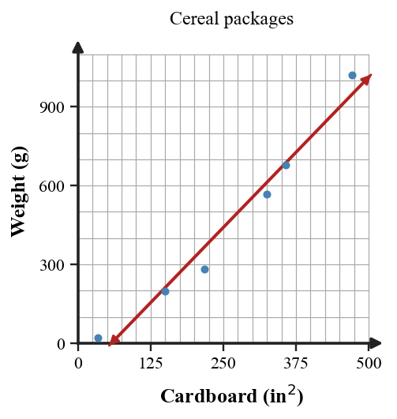

Review Practice Problems
A height model rises, reaches one maximum, and then falls. Name the likely function family and the graph feature that supports your choice.
Use the two graphs. Which model has a constant rate of change and which has a changing rate? Support your answer with one graph feature from each panel.

A cereal company wants to predict weight from package cardboard. The scatterplot suggests an increasing curved relationship. Argue whether a linear model is reasonable for short-term interpolation, long-term extrapolation, both, or neither.

For the table, decide whether the better model is linear or exponential. Then write a possible equation using $x=0$ as the starting input.
| $x$ | $0$ | $1$ | $2$ | $3$ |
|---|---|---|---|---|
| $y$ | $4$ | $10$ | $25$ | $62.5$ |
Use the before-and-after graphs. Name the transformation shown and one key point that moved.

Use the graph of the transformed quadratic. Write a possible equation in vertex form and identify the parent function.

A student says $g(x)=2f(x-1)$ shifts every point on $f$ right $1$ and up $2$. Critique the statement and revise it so it is precise for any function family.
Graph $g(x)=(x+2)^2-3$ on the blank coordinate plane. Label the vertex and two symmetric points.

For $y=-|x+1|+6$, identify the vertex and whether it is a maximum or minimum.
Evaluate the piecewise rule at $x=-2$, $x=0$, and $x=5$: $f(x)=2x+1$ for $x\lt 0$ and $f(x)=x^2$ for $x\ge 0$.
Create a strategy for deciding whether a two-part context should be modeled with an absolute value function or a general piecewise function. Your strategy must include a test for symmetry and a test for rate.
Graph $y=|x+2|-4$ on the blank coordinate plane and label the vertex and intercepts.

For a model of height over time for a thrown ball, identify a reasonable domain restriction.
The model $C=45+12m$ gives cost after $m$ months. Find the cost after $9$ months and interpret the $45$ in context.
The equation $y=2x+4$ and the data table are supposed to match. Find the first mismatch, explain the error, and revise the data point.
| $x$ | $0$ | $1$ | $2$ | $3$ |
|---|---|---|---|---|
| $y$ | $4$ | $6$ | $9$ | $10$ |
Use $h(t)=-16t^2+48t+5$ to predict the height at $t=2$ seconds. Then state one domain limit for the model.
State one advantage of a table when comparing function families.
Write a piecewise rule for a function that is $2x+1$ on $x\lt 0$ and $x^2+1$ on $x\ge 0$. Then evaluate it at $x=-3$ and $x=3$.
Analyze the structure of the equation $(x-3)^2+2=(x-3)^2-5$. Decide whether it has one solution, no solution, or infinitely many solutions, and justify without expanding.
An exponential model has outputs $9,12,16,\frac{64}{3}$ for $x=0,1,2,3$. Find the multiplier and write a possible equation.